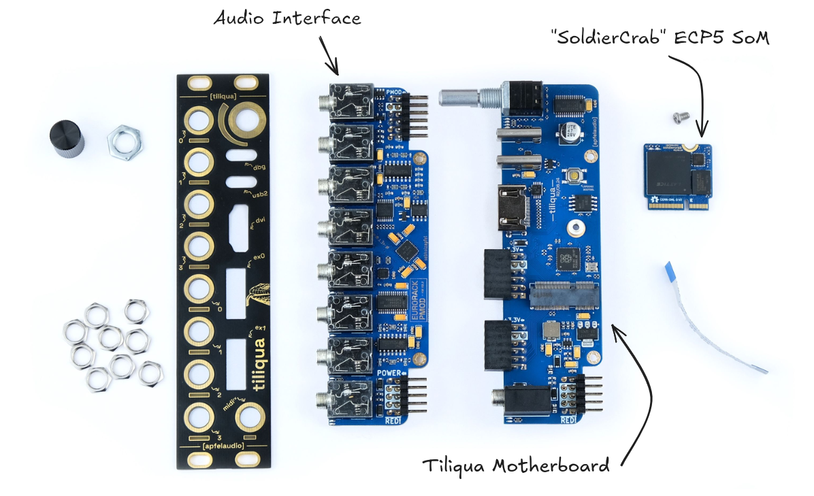

Hardware details
{kind=link}

Schematics and PCBAs
Schematics for all Tiliqua revisions in the wild can be found : here
Tiliqua consists of 3 main PCBAs. All of these are open-hardware designs built in KiCAD and stored in separate repositories.
Motherboard (and front panel)
Repository: tiliqua-motherboard
Switched rotary encoder with bar graph display.
- Dual USB ports:
dbg: Included RP2040-based JTAG debugger supported by openFPGAloader
usb2: USB PHY connected directly to FPGA for high-speed USB Audio support
Display output for video synthesis (maximum resolution 720/60P)
2x expansion ports for up to 24 simultaneous audio channels (PMOD-compatible)
MIDI-In jack (TRS-A standard)
Embedded FPGA SoM (soldiercrab)
Repository: soldiercrab
Lattice ECP5 FPGA, supported by open-source FPGA toolchains
256 Mbit (32 MByte) HyperRAM / oSPI RAM (for long audio buffers or video framebuffers)
128 Mbit (16 MByte) SPI flash for user bitstreams
High-speed USB HS PHY (ULPI)
Audio Interface
Repository: eurorack-pmod
8 (4 in + 4 out) DC-coupled audio channels, 192 KHz / 24-bit sampling supported
Touch and proximity sensing on all 8 audio jacks (if unused)
PWM-controlled, user-programmable red/green LEDs on each audio channel
Jack insertion detection on all 8 jacks
Hardware Revisions
There are a few Tiliqua hardware variants in existence:
- Tiliqua R2
SoldierCrab R2 FPGA SoM (LFE5U-45F, 3.3V 16MByte HyperRAM)
Tiliqua R2 motherboard and front panel.
eurorack-pmod R3.3 audio interface.
- Tiliqua R3
SoldierCrab R3 FPGA SoM (LFE5U-25F, 1.8V 32MByte oSPIRAM)
Tiliqua R3 motherboard and front panel.
eurorack-pmod R3.3 audio interface.
Tiliqua R4 (unreleased)
Hardware Changelist
- From Tiliqua R2 to Tiliqua R3:
Pinswap all DVI pins to true ECP5 complementary pairs.
Swap all tantalums for ceramics, clean up PSU routing, swap LDO for TPS7A91, add choke input capacitors
Delete unused LEDs (MIDI bottom-side)
Fix EDID +5V I2C bridge schematic and enable.
Adjust fuses: +12V ingress 200mA->350mA fuse, GPDI +5V NONE->50mA fuse (so USB host doesn’t pop the fuse!)
Move encoder footprint 0.4mm in, midi 0.1mm out for 0.5mm shim washer on encoder
Pinswap ex0 / ex1 / ffc connectors for improved routing and SI.
Update LED current limiting resistors s/120R/220R
Swap rp2040 xtal to ABM8/15pF/1K (improve yield)
New M2.5 standoff footprint
Move 12V ingress connector in 1.5mm so we can better fit in skiffs.
Switch from 1.6mm to 1.2mm PCBA stackup for mechanical reasons (and improve usb2 connector yield)
(panel) fix DVI connector cutout
Add 2x spare pins for RP2040/ECP5 I2C (no pullups)
Layerswap In1 / In2 (move GND closer to SMPS)
Add flip-flop on CODEC PDN pin (allows for soft-mute when swapping bitstreams)
- From Tiliqua R3 to Tiliqua R4:
Add external PLL SI5351 and route 2x clocks to ECP5 (useful for EMC as it supports spread-spectrum, also for runtime clock/resolution switching).
Add series 27R/33R on all FFC lines to reduce radiated emissions.
- Pinswaps to ensure external PLL is routed to true ECP5 clock input pins:
FFC_SDIN1: 44 -> 42
ENC_B: 40 -> 12
ENC_A: 42 -> 8
PLL_CLK1 -> 40 (removed: spare FPGA to RP2040 line)
PLL_CLK0 -> 44 (removed: spare FPGA to RP2040 line)
Route 4 new ex0/ex1 pins to RP2040 spare pins (shared with expansion connectors)
Swap RP2040 SPI flash for 128MBit part
Put spare RP2040 I2C pins on main tiliqua-mobo I2C bus.
Switch from 4L stackup to 6L stackup to improve SI/EMC.